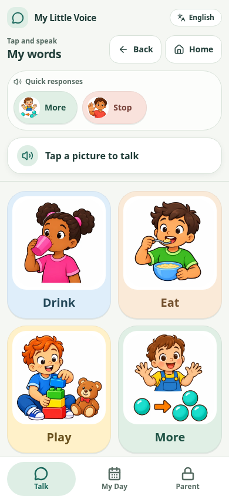

Нажмите на картинку, чтобы сказать
Выберите картинку и услышите слово или сообщение. В режиме отдельных картинок знакомые варианты всегда под рукой.
Общение с помощью картинок на Android
Попить. Поиграть. Сделать перерыв. My Little Voice помогает детям общаться, нажимая на картинки.
Мама создаёт приложение для своей неговорящей дочери с учётом потребностей малышей.
Бесплатно · Без интернета после настройки · Сейчас закрытое тестирование

Пример доски общения на английском языке в My Little Voice.
Начните со знакомого
My Little Voice — приложение для дополнительной и альтернативной коммуникации (AAC). Начните с нескольких знакомых картинок и настройте доски под потребности пользователя.
В библиотеке 850 понятных картинок, помогающих малышам узнавать повседневные предметы, действия и потребности.
Выберите картинку и услышите слово или сообщение. В режиме отдельных картинок знакомые варианты всегда под рукой.
Соберите любимую еду, людей и занятия. Расположите кнопки в привычном порядке и соедините доски.
Соединяйте картинки в конструкторе фраз или печатайте на встроенной клавиатуре и озвучивайте текст.
Используйте фотографии семьи, игрушек и мест. Запишите свой голос для кнопки и выберите привычные слова.
Составьте визуальное расписание дня или последовательность занятий. Расположите картинки по порядку для привычных дел, поездки или следующих шагов.
Сохраните или отправьте резервную копию досок, фотографий и аудиозаписей. При необходимости восстановите содержимое.
В защищённом паролем разделе для родителей можно выбирать картинки, редактировать сообщения и упорядочивать доски. Удерживайте кнопку для редактирования или перемещения. Здесь также доступны голоса и политика конфиденциальности без интернета.
И на бумаге
Создайте визуальное расписание формата A4 или распечатайте карточки для вырезания. Выберите картинки или упорядоченное расписание, проверьте предпросмотр и распечатайте или сохраните PDF.
Используйте привычные картинки для утренних дел, прогулки или бумажной доски общения.
Пример распорядка, который можно создать. В распечатанном расписании будут выбранные вами картинки.
Знакомые слова
Язык интерфейса и язык общения выбираются отдельно. Дополнительные голоса загружаются через Google Play при настройке или в разделе для родителей, а затем работают без интернета.
Приложение и сайт доступны на 11 языках.
Помогите протестировать
My Little Voice проходит закрытое тестирование в Google Play. Выполните три шага с одной и той же учётной записью Google.
Группа Google даёт вашей учётной записи доступ к закрытому тесту.
Вступить в группу GoogleОткройте страницу тестирования и нажмите кнопку участия в тесте.
Стать тестировщикомУстановите My Little Voice из Google Play и следуйте инструкциям настройки.
Открыть Google PlayПожалуйста, оставайтесь участником не менее 14 дней и пользуйтесь приложением в это время. Будем рады отзывам о картинках, речи, удобстве и ошибках. Личный отзыв можно отправить на странице приложения в Google Play.
«Я создаю My Little Voice для своей неговорящей дочери. Мне хотелось приложение со знакомыми картинками и нашими словами, которым можно пользоваться без интернета. Оно останется бесплатным. Если оно поможет и другим семьям, для меня это очень важно».
Интернет нужен для установки и загрузки дополнительных голосов. После настройки общение и речь работают без интернета. Для обновлений и новых голосов подключение понадобится снова.
В приложении нет учётных записей, рекламы и отслеживания. Доски, фотографии и записи хранятся на устройстве. Для участия в тесте и установки через Google Play нужна учётная запись Google.
Да. Добавляйте фотографии, меняйте подписи кнопок и записывайте звук. Всё это входит в семейную резервную копию.
My Little Voice — приложение для Android. Проверьте совместимость в Google Play на своём устройстве. Отзывы о старых и бюджетных устройствах особенно полезны.
Политика доступна на этом сайте и без интернета в разделе для родителей в приложении.Прочитать политику конфиденциальности.